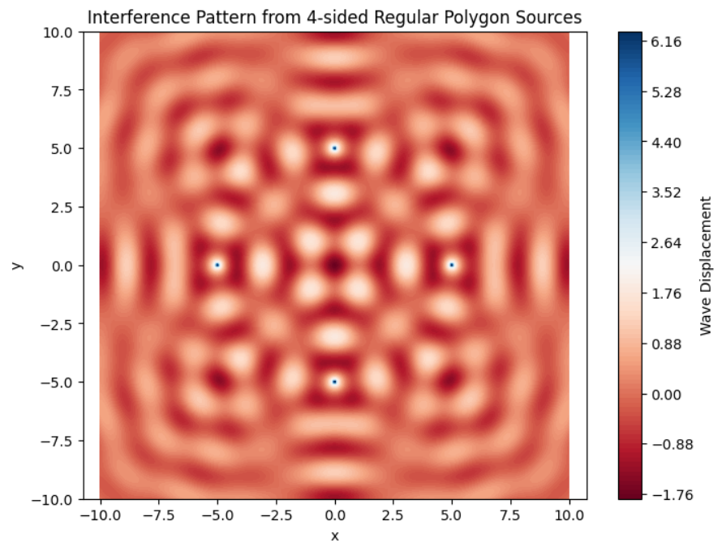

Interference Patterns on a Water Surface
Motivation
Interference occurs when waves from different sources overlap, creating new patterns. On a water surface, this is visually observable when ripples meet, showing how waves reinforce or cancel each other. This task explores interference using a regular polygon arrangement of wave sources.
Wave Equation
A single wave from a point source at \(((x_0, y_0)\)) is described by:
\[
\eta(x, y, t) = \frac{A}{\sqrt{r}} \cos(kr - \omega t + \phi)
\]
Where: - $( \eta(x, y, t) \(): displacement of the water at position \(((x, y)\)) and time \((t\)) -\)( A $): amplitude of the wave - $( r = \sqrt{(x - x_0)^2 + (y - y_0)^2} $): distance to the point source - $( k = \frac{2\pi}{\lambda} $): wave number - $( \omega = 2\pi f $): angular frequency - $( \phi $): initial phase
Problem Setup
- Regular Polygon: Choose a regular polygon (e.g., triangle, square, pentagon).
- Wave Sources: Place point sources at vertices.
- Wave Equations: Define wave from each source.
- Superposition: Total displacement is:
\[
\eta_{sum}(x, y, t) = \sum_{i=1}^{N} \eta_i(x, y, t)
\]
- Analyze Patterns: Identify areas of constructive and destructive interference.
- Visualization: Plot resulting surface pattern.
Python Simulation
import numpy as np
import matplotlib.pyplot as plt
# Parameters
A = 1.0 # Amplitude
wavelength = 2.0 # Wavelength (lambda)
f = 1.0 # Frequency
omega = 2 * np.pi * f
k = 2 * np.pi / wavelength
phi = 0 # Initial phase
t = 0.0 # Time snapshot for visualization
# Polygon settings
N = 4 # Number of sources (e.g., 3 for triangle, 4 for square)
R = 5.0 # Radius of the polygon (distance from center to each source)
# Grid for simulation
x = np.linspace(-10, 10, 500)
y = np.linspace(-10, 10, 500)
X, Y = np.meshgrid(x, y)
# Define source positions (vertices of regular polygon)
sources = []
for i in range(N):
angle = 2 * np.pi * i / N
x0 = R * np.cos(angle)
y0 = R * np.sin(angle)
sources.append((x0, y0))
# Compute total wave displacement at each point
eta_sum = np.zeros_like(X)
for (x0, y0) in sources:
r = np.sqrt((X - x0)**2 + (Y - y0)**2)
eta = A / np.sqrt(r + 1e-6) * np.cos(k * r - omega * t + phi) # Avoid divide-by-zero
eta_sum += eta
# Plotting
plt.figure(figsize=(8, 6))
plt.contourf(X, Y, eta_sum, levels=100, cmap='RdBu')
plt.colorbar(label='Wave Displacement')
plt.title(f"Interference Pattern from {N}-sided Regular Polygon Sources")
plt.xlabel('x')
plt.ylabel('y')
plt.axis('equal')
plt.grid(False)
plt.show()

Observations
For a square configuration (\( N = 4 \)):
- Constructive Interference: Radial lines where waves reinforce due to phase alignment.
- Destructive Interference: Nodes with near-zero amplitude from cancellation.
- The symmetry of the polygon is reflected in the interference pattern.